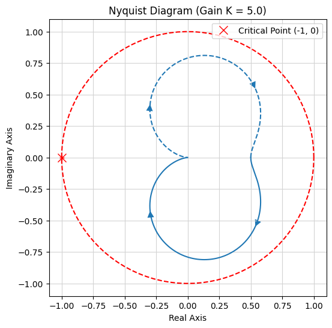
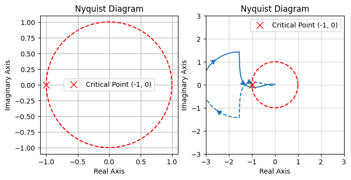
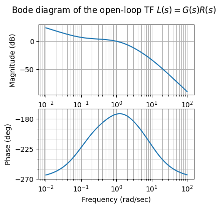
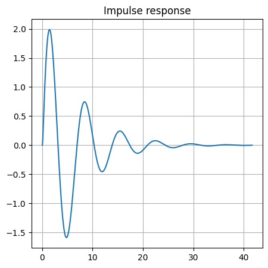
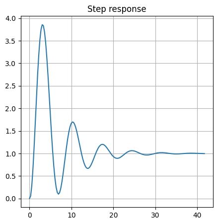
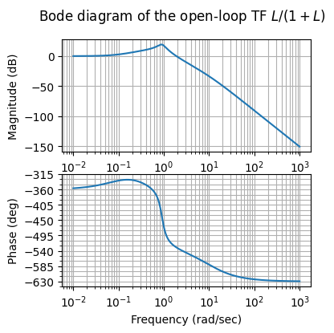
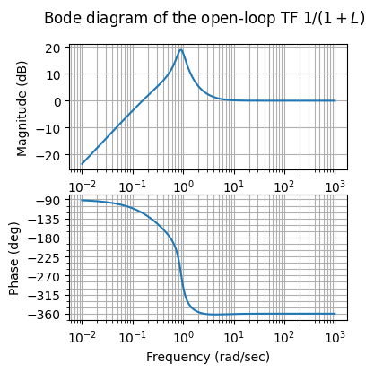

Examples of control systems in frequency domain#
Libraries#
# Install the control library if running in Colab
try:
import control
except ImportError:
!pip install control
import numpy as np
import scipy as sp
import control as ct
import matplotlib.pyplot as plt
Plants#
A set of plants are defined here using \(\text{tf(num, den)}\) function of \(\texttt{control}\) library, and investigated in the following sections.
\(G_1\) is stable, \(G_2\) is unstable as it has a pole in \(s = 1\), \(G_3\) has a time delay (or its Padé approximation), \(G_4\) has non-minimal phase.
# Define a collection of plants to test
plants = {
"stable": ct.tf([1], [1, 2, 10]), # Standard 2nd order
"unstable": ct.tf([1], [1, 1, -2]), # Pole at s=2
"with_delay": ct.tf([1], [1, 2, 10]) * ct.tf(*ct.pade(0.5, n=2)), # 0.5s delay
"non_minimal_phase": ct.tf([-1, 2], [1, 2, 10]), # RHP zero at s=2
}
Example 1. Stable system#
The forced response of the system in Laplace domain
has a realization in time domain as
It can be interpreted as a mass-damper-spring system, i.e. a LTI second order system with positive mass, damping coefficient and spring stiffness.
plant_name = "stable"
G = plants[plant_name]
print(f"Investigating {plant_name} plant:\nG(s) = {G}")
Investigating stable plant:
G(s) =
1
--------------
s^2 + 2 s + 10
K = 5.0 # Regulator Gain
L = K * G
# Calculate Stability Margins
gm, pm, wg, wp = ct.margin(L)
# Plotting
fig, ax = plt.subplots(1,1, figsize=(6, 6))
ct.nyquist_plot(L)
theta_v = np.linspace(0, 2*np.pi, 100)
x_circle = np.cos(theta_v)
y_circle = np.sin(theta_v)
# Aesthetics and Labels
ax.plot([-1], [0], 'rx', markersize=10, label='Critical Point (-1, 0)') # , fontweight='bold') # )
ax.plot(x_circle, y_circle, '--', color='red')
ax.set_title(f'Nyquist Diagram (Gain K = {K})')
ax.set_xlabel('Real Axis')
ax.set_ylabel('Imaginary Axis')
ax.grid(True)
ax.set_aspect("equal")
plt.legend()
fig, ax = plt.subplots(1,1, figsize=(6, 6))
ct.bode_plot(L, margins=True)
ax.grid(True)
print(f"Phase Margin: {pm:.2f}° at {wp:.2f} rad/s")
print(f"Gain Margin: {gm:.2f} at {wg:.2f} rad/s")
plt.show()
Phase Margin: inf° at nan rad/s
Gain Margin: inf at nan rad/s


Example 2. Unstable system#
The forced response of the system in Laplace domain
has a realization in time domain as
i.e. it can be interpreted as the linearized equation of inverted-pendulum system around its unstable equilibrium,
with \(\sin \theta \sim \theta\), for \(\theta \approx \overline{\theta} = 0\). Thus the linearized equation reads
plant_name = "unstable"
G = plants[plant_name]
print(f"Investigating {plant_name} plant:\nG(s) = {G}")
from control.matlab import bode
#> Bode diagram
fig, ax = plt.subplots(2,1, figsize=(4, 4))
mag, phase, omega = bode(G)
# ct.bode_plot(L, margins=True)
ax[0].plot(omega, mag)
ax[0].grid(True)
ax[1].plot(omega, phase)
ax[1].grid(True)
fig.suptitle(r"Bode diagram of the open-loop TF $G(s)$")
#> Nyquist diagram
fig, ax = plt.subplots(1,1, figsize=(4, 4))
ct.nyquist_plot(G)
theta_v = np.linspace(0, 2*np.pi, 100)
x_circle = np.cos(theta_v)
y_circle = np.sin(theta_v)
# Aesthetics and Labels
ax.plot([-1], [0], 'rx', markersize=10, label='Critical Point (-1, 0)') # , fontweight='bold') # )
ax.plot(x_circle, y_circle, '--', color='red')
ax.set_title(f'Nyquist Diagram')
ax.set_xlabel('Real Axis')
ax.set_ylabel('Imaginary Axis')
ax.grid(True)
ax.set_aspect("equal")
plt.legend()
Investigating unstable plant:
G(s) =
1
-----------
s^2 + s - 2
<matplotlib.legend.Legend at 0x7f739ad8ebe0>


"""
k = 1.
zeros = [.2, .2]
poles = [10, 10]
n_integrators = 1
den_integrators = np.zeros((n_integrators+1)); den_integrators[0] = 1
K = k * ct.tf(np.poly(zeros), np.poly(poles)) * ct.tf(1, den_integrators)
print(K)
"""
'\nk = 1.\nzeros = [.2, .2]\npoles = [10, 10]\nn_integrators = 1\n\nden_integrators = np.zeros((n_integrators+1)); den_integrators[0] = 1\n\nK = k * ct.tf(np.poly(zeros), np.poly(poles)) * ct.tf(1, den_integrators)\n\nprint(K)\n'
# k, z, p = -10., 1, 10
# K = ct.tf([1, z], [1, p, 0]) * k
"""
# Controller #1
#> Proportional controller
k = 3.
K = K
"""
"""
# Controller #2
# Regulator TF, K(s)=
# 30 s + 3
# ----------
# s^2 + 10 s
#> Controller with one integrator to get zero error for step input
z, p = -.1, -10.
# gain = k / (-z) * (-p)
gain = .3
k = gain / (-z) * (-p)
K = ct.tf([1,-z],[1,-p, 0]) * k
"""
# Controller #3
#> Controller with double zeros and poles
# Regulator TF, K(s)=
# 3e+04 s + 3000
# --------------
# 0.1 s^2 + s
zeros = [-.1,] # , -.1]
poles = [-10.]
gain = .3
n_integrators = 1
den_integrators = np.zeros((n_integrators+1)); den_integrators[0] = 1
num_coeffs = np.poly(zeros); num_coeffs = num_coeffs / num_coeffs[-1]
den_coeffs = np.poly(poles); den_coeffs = den_coeffs / den_coeffs[-1]
K = gain * ct.tf(num_coeffs, den_coeffs) * ct.tf(1, den_integrators)
"""
#> With integral
k, z, p = 50., 1, -100
K = ct.tf([1], [1, -p]) * k
# print(K)
# 2. Design the Regulator
# We use two zeros at s=0.5 to 'pull' the phase up early
# and two high-frequency poles at s=20 to filter noise.
zeros = [-.2, -.2]
poles = [-20, -20]
k = 250 # High gain is usually needed to 'catch' the unstable system
K = k * ct.tf(np.poly(zeros), [1, 0, 0]) * ct.tf(1, np.poly(poles))
"""
print("Regulator TF, K(s)=")
print(K)
#> Open-loop TF
L = G * K
# 3. Check Stability
gm, pm, wg, wp = ct.margin(L)
print(f"Phase Margin: {pm:.2f} deg")
# Plotting
fig, ax = plt.subplots(1,2, figsize=(8, 4))
ct.nyquist_plot(L)
theta_v = np.linspace(0, 2*np.pi, 100)
x_circle = np.cos(theta_v)
y_circle = np.sin(theta_v)
# Aesthetics and Labels
ax[0].plot([-1], [0], 'rx', markersize=10, label='Critical Point (-1, 0)') # , fontweight='bold') # )
ax[0].plot(x_circle, y_circle, '--', color='red')
ax[0].set_title(f'Nyquist Diagram')
ax[0].set_xlabel('Real Axis')
ax[0].set_ylabel('Imaginary Axis')
ax[0].grid(True)
ax[0].set_aspect("equal")
ax[0].legend()
ax[1].plot([-1], [0], 'rx', markersize=10, label='Critical Point (-1, 0)') # , fontweight='bold') # )
ax[1].plot(x_circle, y_circle, '--', color='red')
ax[1].set_title(f'Nyquist Diagram')
ax[1].set_xlabel('Real Axis')
ax[1].set_ylabel('Imaginary Axis')
ax[1].grid(True)
ax[1].set_xlim(-3,3)
ax[1].set_ylim(-3,3)
ax[1].set_aspect("equal")
ax[1].legend()
from control.matlab import bode
fig, ax = plt.subplots(2,1, figsize=(4, 4))
mag, phase, omega = bode(L)
# ct.bode_plot(L, margins=True)
ax[0].plot(omega, mag)
ax[0].grid(True)
ax[1].plot(omega, phase)
ax[1].grid(True)
fig.suptitle(r"Bode diagram of the open-loop TF $L(s) = G(s)R(s)$")
plt.show()
#> Closed-loop TFs
Ly_ref = L / ( 1 + L ) # yref to y
Le_ref = 1 / ( 1 + L ) # yref to e
# fig, ax = plt.subplots(1,1, figsize=(5, 5))
# ct.bode_plot(1/(1+L), margins=True)
# ax.grid(True)
# print(f"Phase Margin: {pm:.2f}° at {wp:.2f} rad/s")
# print(f"Gain Margin: {gm:.2f} at {wg:.2f} rad/s")
# plt.show()
Regulator TF, K(s)=
3 s + 0.3
-----------
0.1 s^2 + s
Phase Margin: 6.50 deg


print(gain)
print(num_coeffs)
print(den_coeffs)
0.3
[10. 1.]
[0.1 1. ]
#> Impulse response
t, y = ct.impulse_response(L/(1+L),)
fig, ax = plt.subplots(1,1, figsize=(5,5))
ax.plot(t,y)
ax.grid(True)
ax.set_title("Impulse response")
plt.show()
#> Step response
t, y = ct.step_response(L/(1+L),)
fig, ax = plt.subplots(1,1, figsize=(5,5))
ax.plot(t,y)
ax.grid(True)
ax.set_title("Step response")
plt.show()


fig, ax = plt.subplots(2,1, figsize=(4, 4))
mag, phase, omega = bode(Ly_ref)
# ct.bode_plot(L, margins=True)
ax[0].plot(omega, mag)
ax[0].grid(True)
ax[1].plot(omega, phase)
ax[1].grid(True)
fig.suptitle(r"Bode diagram of the open-loop TF $L/(1+L)$")
Text(0.5, 0.98, 'Bode diagram of the open-loop TF $L/(1+L)$')

fig, ax = plt.subplots(2,1, figsize=(4, 4))
mag, phase, omega = bode(Le_ref)
# ct.bode_plot(L, margins=True)
ax[0].plot(omega, mag)
ax[0].grid(True)
ax[1].plot(omega, phase)
ax[1].grid(True)
fig.suptitle(r"Bode diagram of the open-loop TF $1/(1+L)$")
Text(0.5, 0.98, 'Bode diagram of the open-loop TF $1/(1+L)$')
